必选锚点
- 布拉格 Prague
- 维也纳 Vienna
- 布达佩斯 Budapest
优先加 1-2 个
- 克鲁姆洛夫 Cesky Krumlov
- 萨尔茨堡 Salzburg
- 瓦豪 / 梅尔克
- 圣安德烈 / 多瑙河湾
想湖山再加
- 哈尔施塔特 Hallstatt
- 戈绍 Gosau
- Salzkammergut 湖区
- 巴拉顿湖 Balaton
三座首都构成最稳主轴，建议默认保留。
路线锚点


从布拉格向外加点，核心取舍是 CK 小镇 vs 轻量日游。
捷克候选
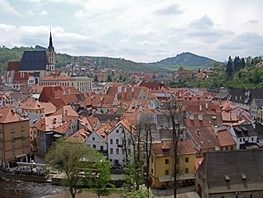
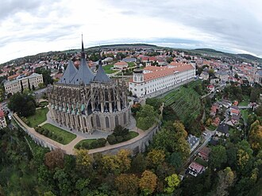
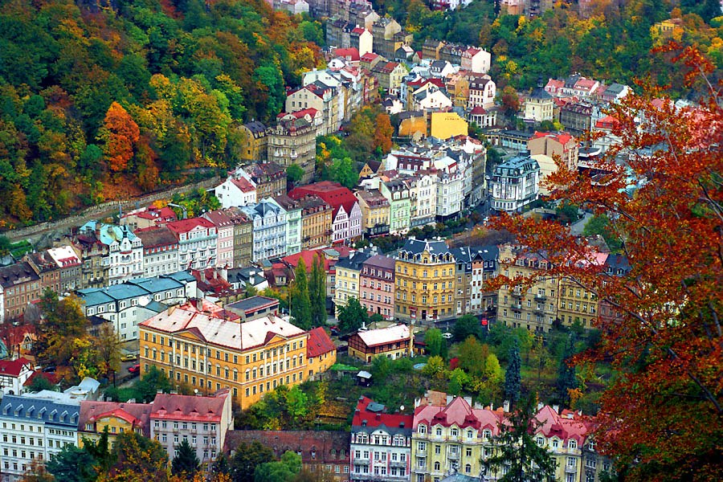
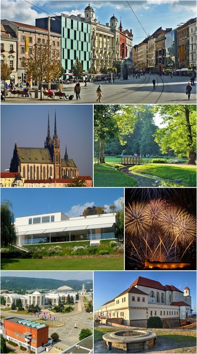
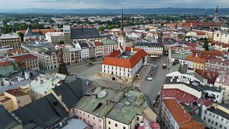
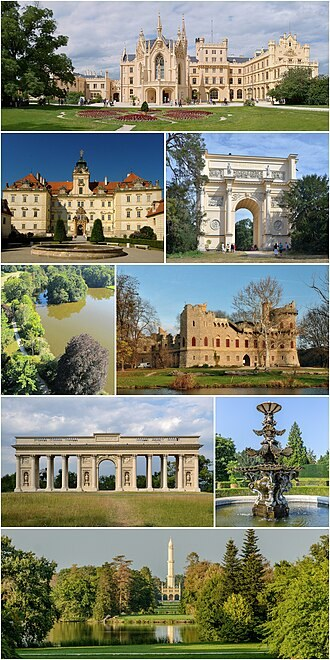
维也纳稳，湖山漂亮但会增加绕路和天气风险。
奥地利候选
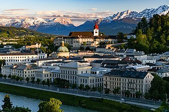
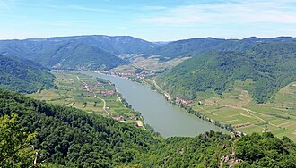


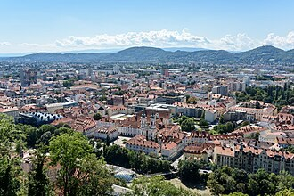
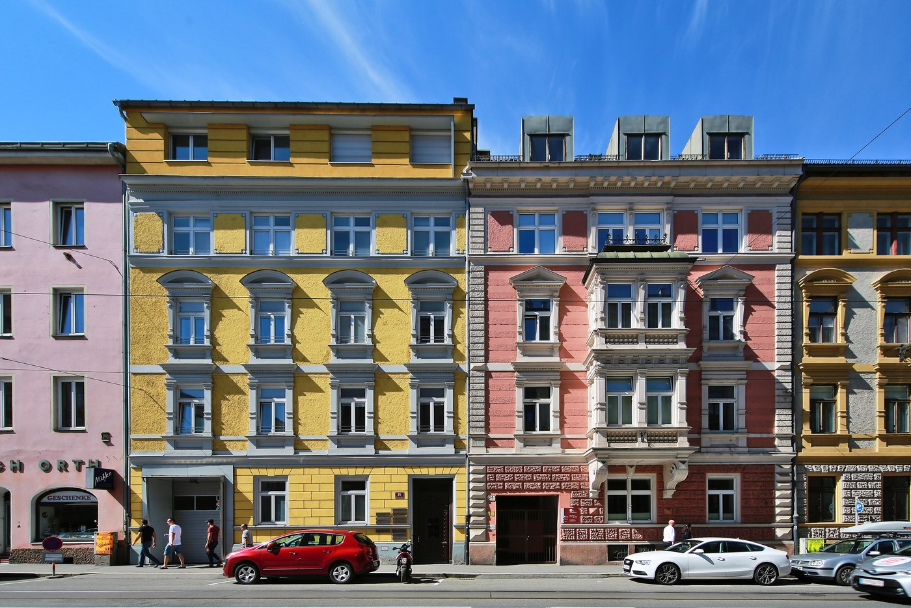
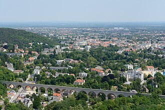
布达佩斯外加点优先考虑轻量日游，再考虑酒乡/湖区慢线。
匈牙利候选
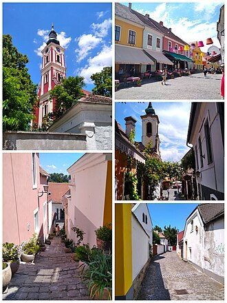
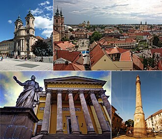
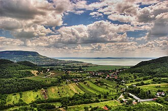
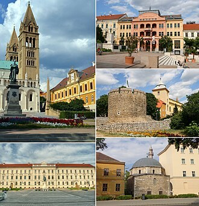
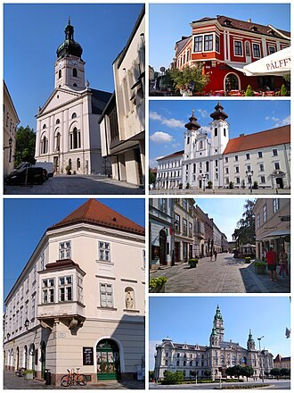
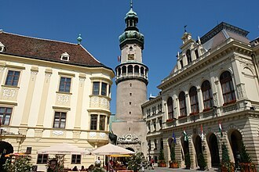
这些不影响跨城路线，后续排布拉格每日行程时再细化。
布拉格内部

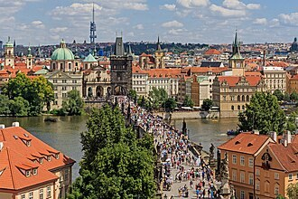

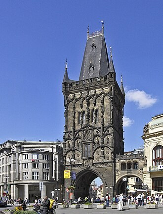
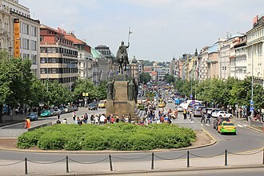
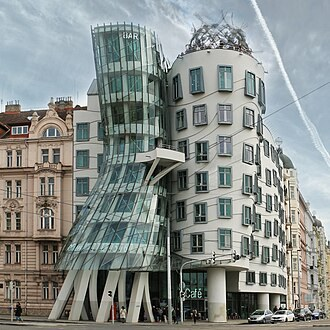
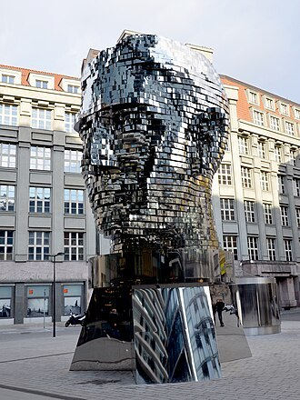
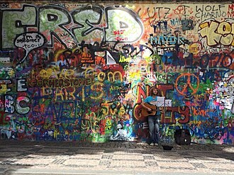
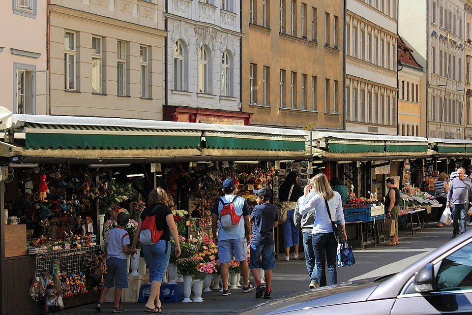
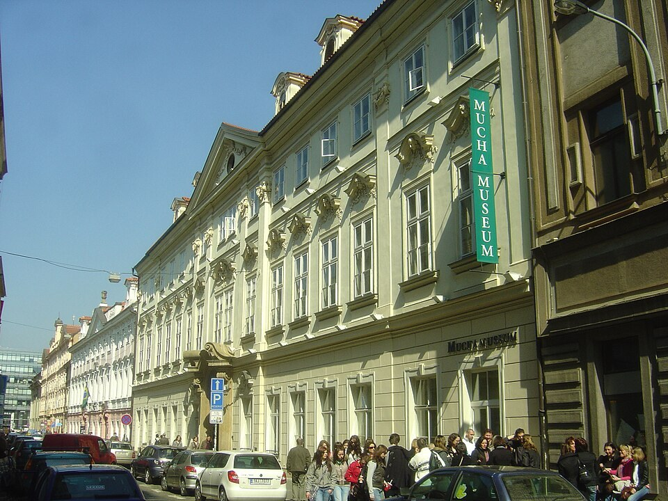